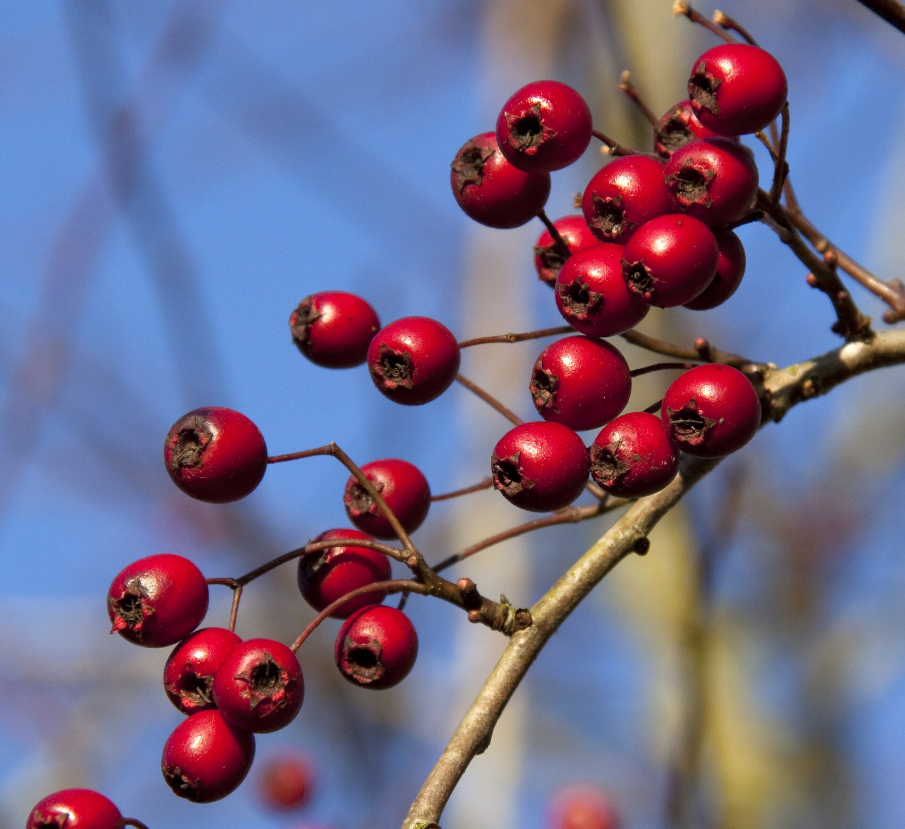

Photo by: Magnus Manske
The leaves, berries, flowers, and flowers buds are all edible. All of which can be eaten either raw or cooked. The leaves and leaf buds can be added to a salad. To eat the berries raw you must eat around the large seed like a cherry. The large seed inside hawthorn berries is inedible.
1 c hawthorn berries (with seeds removed)
1 c sugar
1/2 c water
1 tsp lemon juice
Pectin isn't needed for this recipe since hawthorn berries are high in pectin.
Put the hawthorn berries in a blender and blend until smooth. Bring the hawthorn juice, sugar, water, and lemon juice to a boil. Let it boil rapidly for 10 - 15 minutes.Pour the mixture into a container and allow to set for 24 hours.
1 tbs hawthorn flowers and/or leaves
1 c boiled water
Add hawthorn flower and/or leaves to a cup of boiled water. Steep for 15 minutes. Add sweetener to taste.